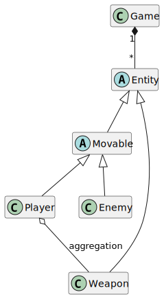
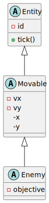
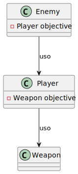
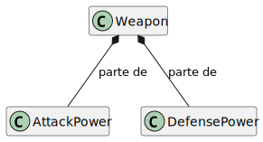
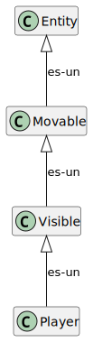
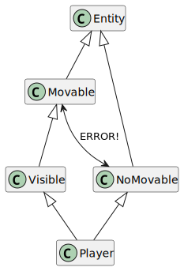
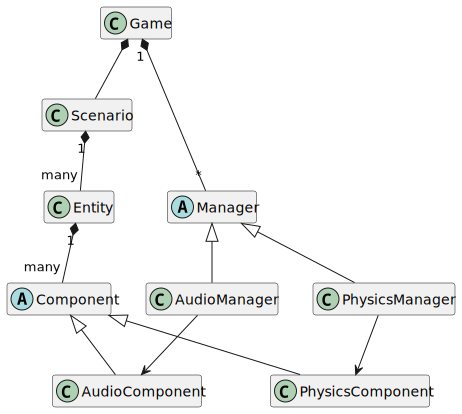
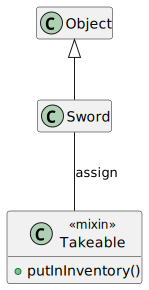

Los videojuegos son, normalmente, sistemas complejos y grandes
Tienen muchos subsistemas que, además, gestionan aspectos distintos y hasta tecnologías heterogéneas
La complejidad puede crecer tanto, que carecer de un diseño global coherente puede hacer inmanejable el desarrollo
Por eso se usan arquitecturas
Un arquitectura, análoga a la de un edificio, es una manera de organizar el código para hacer el desarrollo más eficiente
Pensad en sistemas que hacen muchas cosas, como Unity
¿Podríais implementar Unity?
Unity es un motor de juego entero
(y, además, un editor)
Cada parte de un motor de juego como Unity tiene que:
La arquitectura software de un videojuego no es para la máquina, es para el programador
Pensad en un juego cuyo código comunique los módulos de varias maneras distintas
Cuando se tienen 6 subsistemas distintos, la organización del código es indispensable
Además, puede tener impacto en la eficiencia
Un paradigma de programación muy usado para sistemas software que requieren arquitecturas complejas es la programación orientada a objetos basada en clases
Las clases son los tipos, las estructuras de las que se crean instancias

Figura 1: Ejemplo de clases
Las instancias son cada uno de los elementos/objetos concretos que tienen las propiedades (atributos y métodos) de una clase
Aquí, player y enemy son instancias de Player y Enemy respectivamente:
Player player("player", 10, 10, 0, 0, 100);
Enemy enemy("enemy", 15, 15, 0, 0, &player);
Las clases, como módulos, se relacionan en un sistema
Hay muchos tipos de relaciones y muchas maneras de usarlas, aquí sólo comentamos algunas
Las clases pueden heredarse, de forma que una clase hija es-una (is-a) clase padre también

Figura 2: Clases para estructurar un juego
Las clases pueden usarse unas a otras, de forma que se pasen mensajes

Figura 3: Clases que se usan
Las clases pueden componerse, de forma que la relación es muy fuerte. Así, si desaparece el todo, desaparecen las partes también

Figura 4: Composición de clases
La programación orientada a objetos clásica permite una manera de modular sistemas
Entre otros, los videojuegos son razonablemente complejos y manejan dos aspectos que hay que gestionar:
Muchos videojuegos se han modelado con patrones de herencia
¿Por qué no seguimos haciéndolo?
(Hay mucha gente que sigue haciéndolo, y en muchos casos no es un problema)
La herencia se basa en la relación es-un
Muchas veces:
Enemigos son MoviblesJugadores son PersonajesFísicosIntentémoslo:
entidad → movible → visible → jugador

Figura 5: Herencia básica
¿Pero qué pasa cuando queremos crear…
Ahora hagamos un jugador que no se puede mover:

Figura 6: Herencia problemática
A finales de los 90 esto se convirtió en un problema claro, y las arquitecturas por componentes de entidad se generalizaron
En general (y mucho en diseño de videojuegos) preferimos composición antes que herencia
Para aliviar los problemas relativos de la estructura de herencia (con es-un), usamos componentes
Un componente es un aspecto, una propiedad o característica que tiene una entidad
Por ejemplo, podemos tener un componente que sirva para pintar
Este componente se usará sólo para pintar, y no sabrá nada del sonido
También podríamos añadir un componente para modelar un inventario
El componente no sabrá nada de la entidad que lo contiene. Sólo tendrá información de cómo guardar objetos
Puede haber un componente para las entidades que son visibles, y otro componente para las entidades que tienen respuesta física al sistema
| Entidad | Física | Visible |
|---|---|---|
| Nube | ✗ | ✓ |
| Orco | ✓ | ✓ |
| Trigger | ✗ | ✗ |
| Espíritu | ✓ | ✗ |
Una entidad no es más que un identificador, un elemento vacío que contiene componentes
La entidad no tiene información de cómo pintarse, ni de cómo moverse
Es decir, una entidad es algo genérico que sólo tiene una lista de componentes
var entidad = {
id : 4,
componentes : [
drawable,
sound,
movable,
physics
]
}
La entidad delega en sus componentes todo el comportamiento:
// en cada ciclo (tick), la entidad simplemente
// delega en sus componentes
Entity.prototype.tick = function() {
this.components.forEach(function(component) {
component.tick();
});
}
Cada componente tiene información sobre un aspecto del juego
Tiene sentido, por lo tanto, dividir el código en partes (hacer módulos) que se encarguen de trabajar los dominios correspondientes
Cada uno de estos módulos suelen llamarse sistemas o subsistemas
Cada sistema suele manejar y tener acceso a los componentes correspondientes
Sí, en arquitectura no hay teorías generales. Las cosas "suelen" hacerse de una u otra manera
Por ejemplo, en la parte física no suele influir mucho el sonido:

Figura 7: Relación entre sistemas y componentes
Así pues, AudioComponent sólo se relaciona con AudioManager (y, probablemente, con Entity) pero no sabe nada de PhysicsManager
Un mixin es una clase pensada para contener funcionalidad, pero no ser autónoma
Usar mixins no representa especialización (es-un)
Es como una interfaz (generalmente una clase puede incluir varios mixins), pero sí que tiene código
En JavaScript, una funcionalidad aproximada de mixin se puede conseguir con Object.assign():
class Sword extends Object {}
class Takeable { putInInventory() {/*...*/} }
Object.assign(Sword.prototype, Takeable);

Figura 8: Ejemplo en UML con un mixin
Object.assign() sólo copia propiedades entre objetos, no hay herencia
En este tema hemos visto (y veremos) una manera de hacer arquitecturas por componentes, pero hay muchas
Paso de mensajes, entidades puras, sistemas independientes o acoplados… cada decisión de diseño depende del problema a resolver
No hay una solución general para todos los problemas